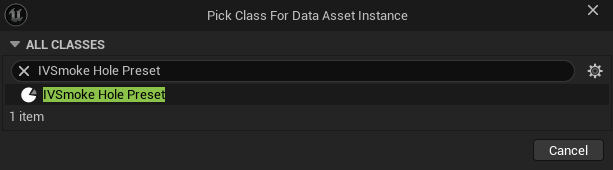
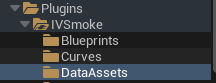
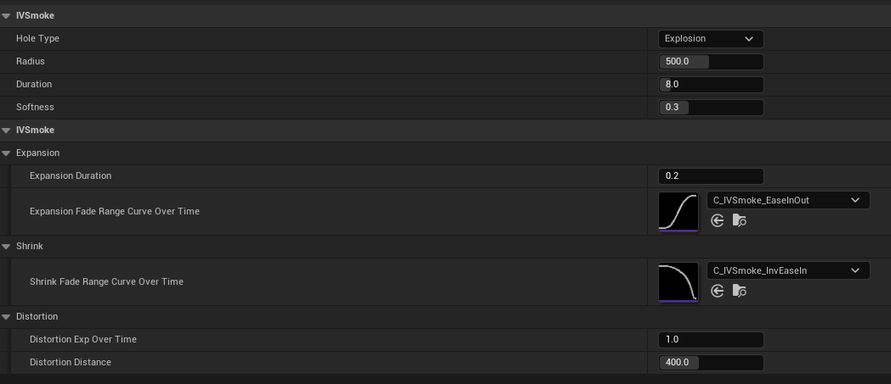
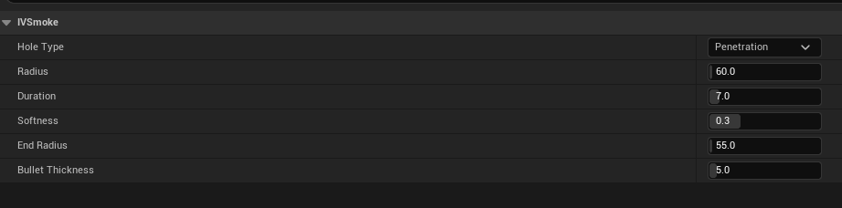
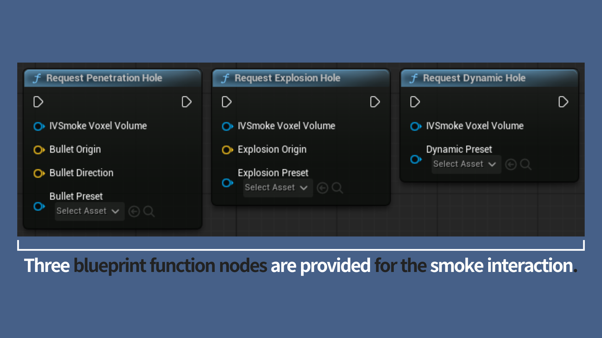
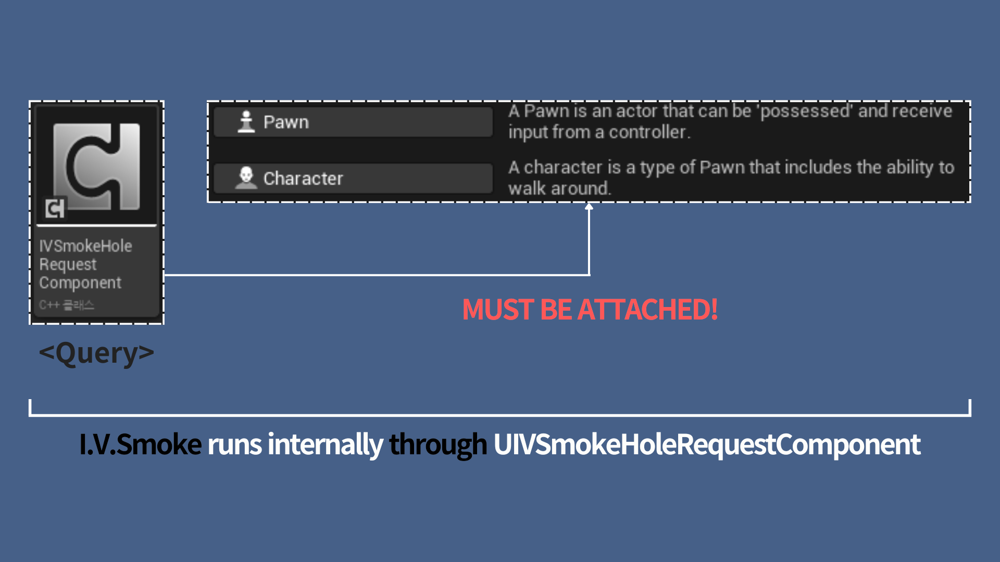
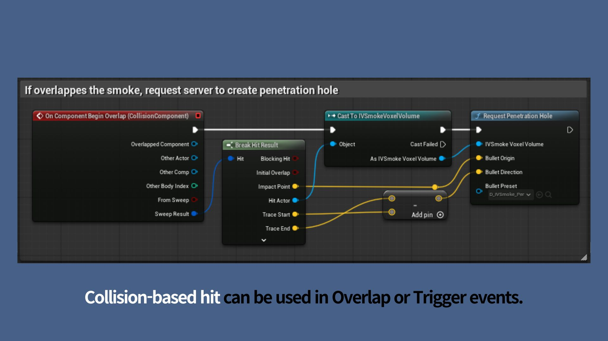
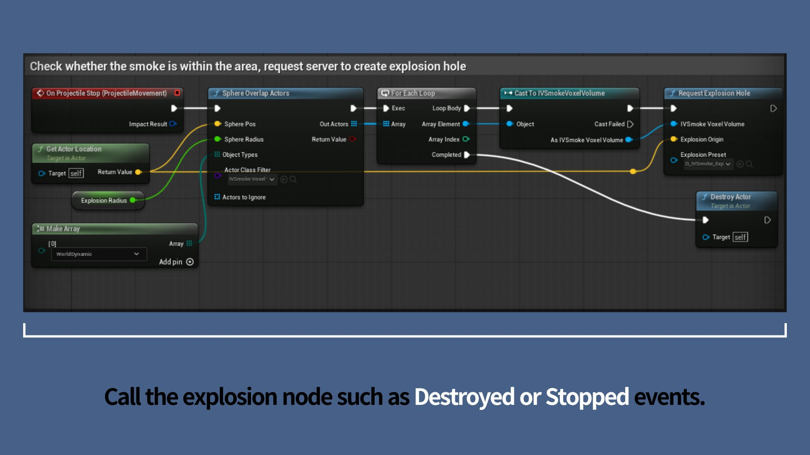
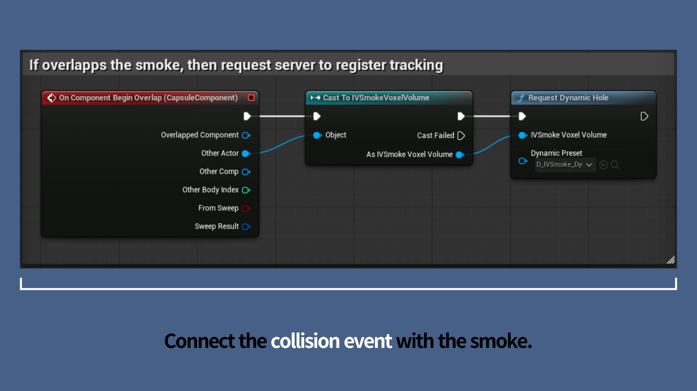

UIVSmokeHoleGeneratorComponent lets gameplay events carve temporary holes into the smoke — bullet trails, explosion voids, or a moving character clearing a path. Holes are purely visual and do not change the voxel simulation itself.
There are three hole types:
| Hole Type | Shape | Typical Use |
|---|---|---|
| Penetration | Linear tunnel | Bullets, railgun shots |
| Explosion | Expanding sphere | Grenades, mortar shells |
| Dynamic | Box following an actor | Characters, vehicles moving through smoke |
Hole behavior is configured through Hole Preset Data Assets, then triggered at runtime via Blueprint request nodes.
Creating a Hole Preset
In the Content Drawer, right-click and select Miscellaneous > Data Asset, then choose IVSmoke Hole Preset as the class.


Demo presets ship with the plugin under Plugins > IVSmoke > DataAssets:

Preset Properties
All presets share these common properties:
| Property | Description |
|---|---|
| Hole Type | Penetration, Explosion, or Dynamic. Determines which properties below apply. |
| Duration | Hole lifetime in seconds. |
| Softness | Edge softness (0 = hard edge, 1 = soft gradient). |
Explosion (Grenade)

| Property | Description |
|---|---|
| Radius | Maximum hole radius. |
| Expansion Duration | Time (seconds) for the hole to expand after the explosion. The remaining lifetime (Duration − Expansion Duration) is the shrink phase. |
| Expansion Fade Range Curve Over Time | Hole radius during the expansion phase. X (0–1): time normalized to Expansion Duration. Y (0–1): radius as a fraction of Radius. |
| Shrink Fade Range Curve Over Time | Hole radius during the shrink phase. X (0–1): time normalized to the shrink duration. Y (0–1): radius as a fraction of Radius. |
| Distortion Exp Over Time | Exponent applied to the distortion falloff over time: 1 - pow(1 - NormalizedTime, Exp). |
| Distortion Distance | Maximum distortion distance. |
Penetration (Bullet)

| Property | Description |
|---|---|
| Radius | Hole radius at the entry point, where the bullet first hits the smoke. |
| End Radius | Hole radius at the exit point. The radius interpolates linearly from Radius to End Radius along the path. |
| Bullet Thickness | Physical collision size of the bullet, used for obstacle detection. Larger values make bullets more likely to be blocked by nearby walls. |
Dynamic (Moving Actor)
| Property | Description |
|---|---|
| Extent | Size of the box-shaped hole that follows the actor. |
| Distance Threshold | Minimum distance the actor must travel before a new hole segment is created. |
Usage

Prerequisite: Add UIVSmokeHoleRequestComponent
Before calling any request node, add a **UIVSmokeHoleRequestComponent** to the Character or Pawn that will interact with the smoke. This component handles the interaction queries between the actor and the smoke volume, and is required whenever the target AIVSmokeVoxelVolume uses a UIVSmokeHoleGeneratorComponent.

Case A. Request Penetration Hole
Simulates a high-speed projectile piercing through the smoke in a straight line.

When to call: On physical detection events of the projectile — Hit, Overlap, or Destroyed.
| Pin | Connect To | Notes |
|---|---|---|
| IVSmokeVoxelVolume | Other Actor from Overlap/Hit | The smoke volume that was hit. |
| Bullet Origin | Actor's World Location | Start point of the linear trajectory. |
| Bullet Direction | Actor's Forward Vector | Normalized unit vector for the projectile's heading. |
| Bullet Preset | Preset dropdown | An IVSmokeHolePreset with Hole Type set to Penetration. |
Case B. Request Explosion Hole
Creates a spherical void, e.g. for grenades, C4, or artillery shells.

When to call: At the moment the explosion occurs — typically OnComponentHit, OnComponentBeginOverlap, or when the projectile actor is Destroyed.
| Pin | Connect To | Notes |
|---|---|---|
| IVSmokeVoxelVolume | Other Actor from Overlap/Hit | The smoke volume that was hit. |
| Explosion Origin | Actor's World Location | Center of the spherical clearing. |
| Explosion Preset | Preset dropdown | An IVSmokeHolePreset with Hole Type set to Explosion. |
Case C. Request Dynamic Hole
Clears smoke in real time along the path of a moving actor, such as a character or vehicle. Once triggered, the system tracks the actor automatically.

When to call: When the actor enters the smoke — typically OnComponentBeginOverlap of the actor's collision component.
| Pin | Connect To | Notes |
|---|---|---|
| IVSmokeVoxelVolume | Other Actor from Overlap | The smoke volume the actor entered. |
| Dynamic Preset | Preset dropdown | An IVSmokeHolePreset with Hole Type set to Dynamic. |
Copyright (c) 2026, Team SDB. All rights reserved.